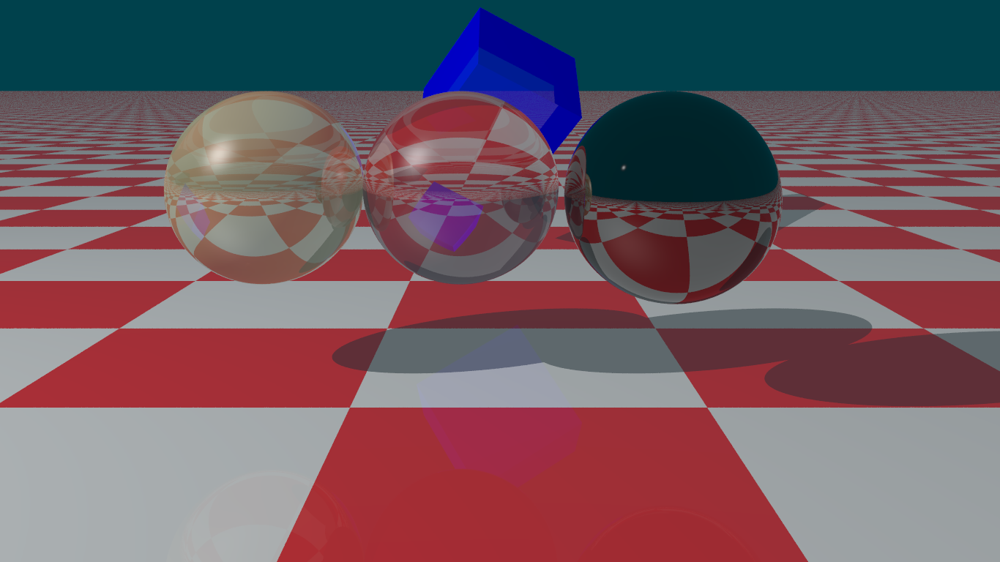
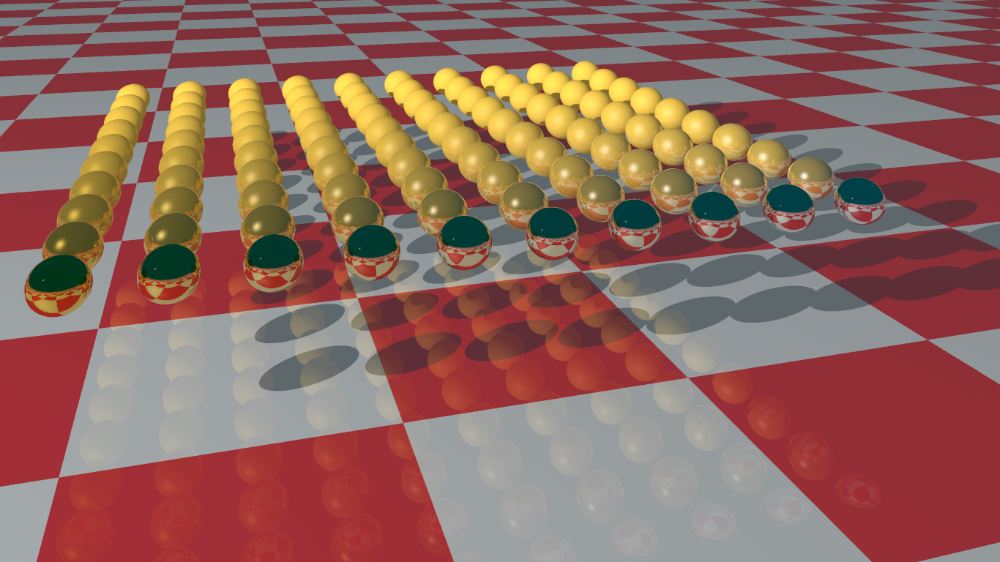
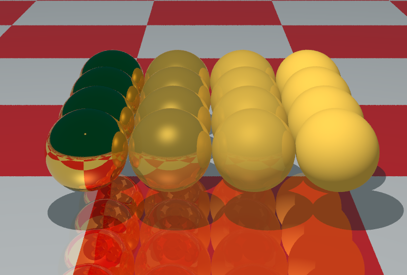
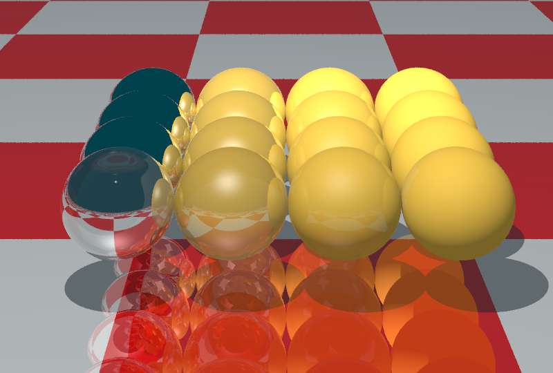
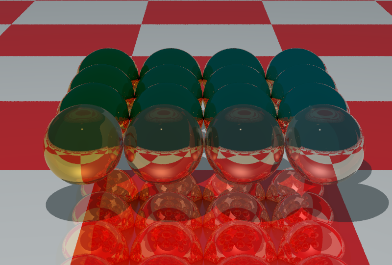
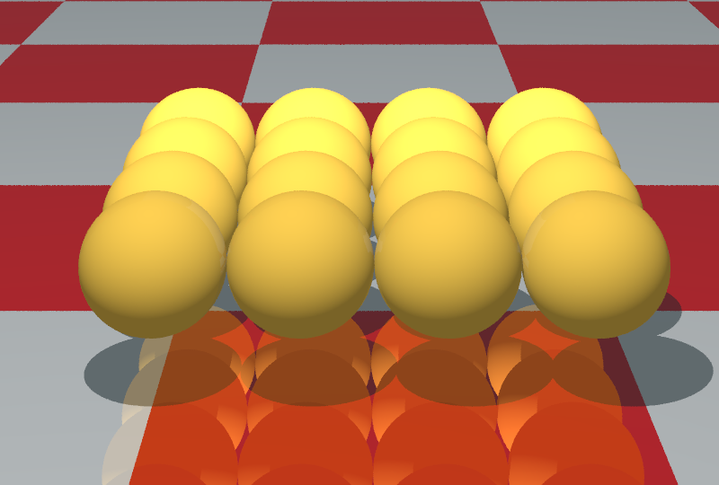

Straussov model osvetlenia
Domáca úloha NPGR004 : Róbert Eckhaus
Originálny paper
Parametre materiálov
- Km = metalness (kovovosť)
- Ks = smoothness (hladkosť)
- Ka = ambient light (koeficient ambientného osvetlenia)
- Kt = transparency (priehľadnosť)
- n = index lomu
- Color = farba materiálu
Vyrenderované obrázky
(Kt = 0.5, Km = 0.0, Ks = 0.9)
(Kt = 0.7, Km = 0.0, Ks = 0.9)
(Kt = 0.2, Km = 1.0, Ks = 1.0) 
Najviac smooth telesá sú v popredí. Metalickosť stúpa smerom zprava do ľava. Všetky objeky sú nepriehľadné.
Metalické objekty odrážajú viac svoju farbu aj keď sú veľmi hladké. Absolútne smooth objekty pôsobia ako zrkadlo. 
Km = 1.0, mení sa Ks (0.0..1.0) 
Km = 0.0, mení sa Ks (0.0..1.0) 
Ks = 1.0, mení sa Km (0.0..1.0) 
Ks = 0.0, mení sa Km (0.0..1.0) 